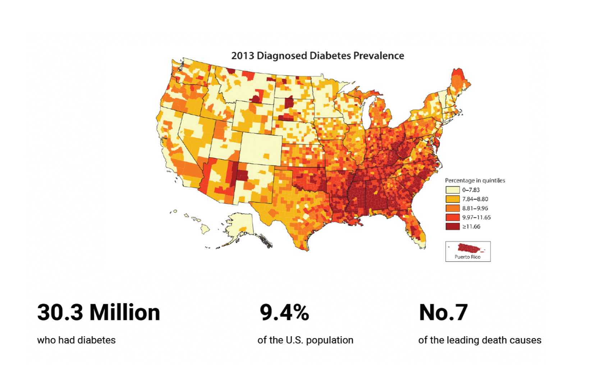
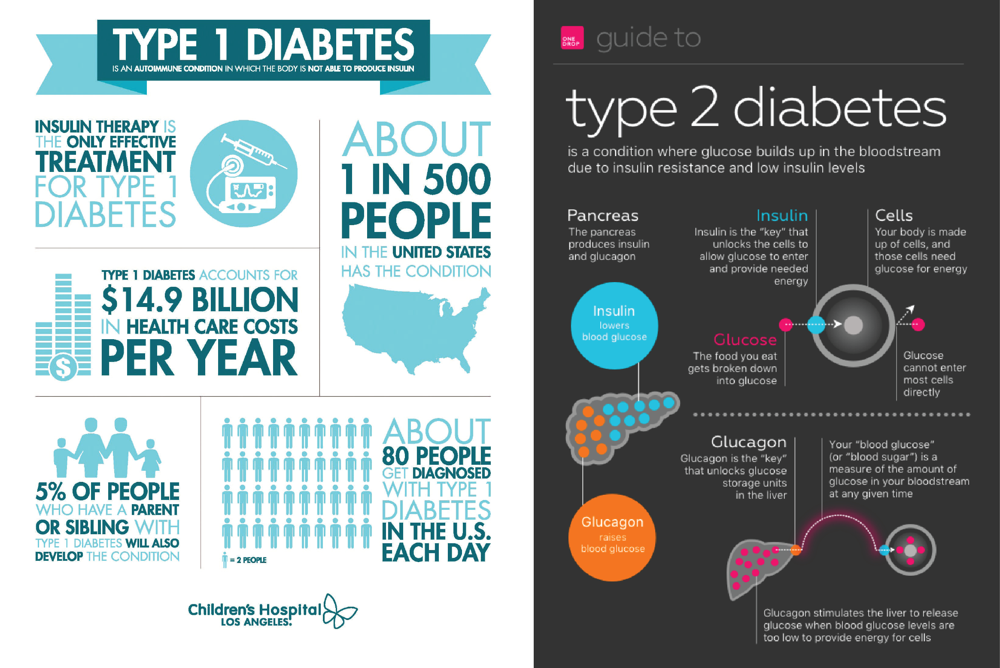
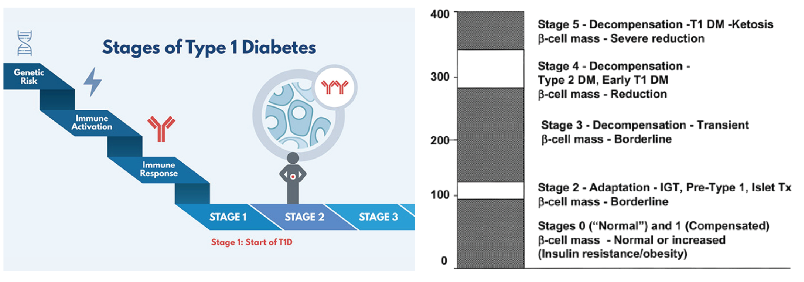
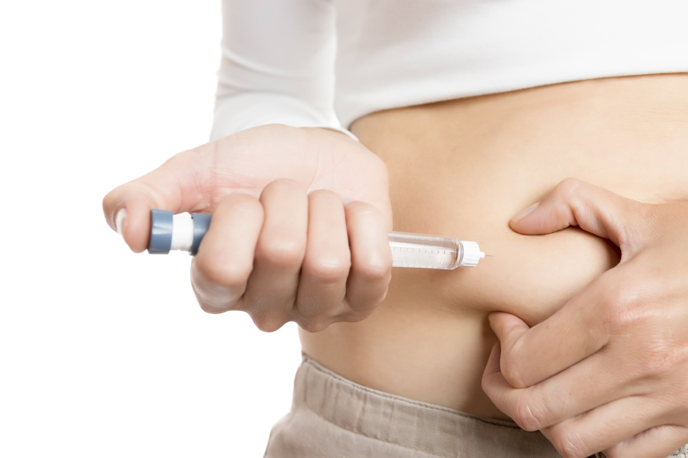

Overview
Introduction
Diet monitoring has been proved to be a crucial part of glucose level management for the diabetics. Various meal log products have already been delivered to over 30 million diabetics to document their food options. However, through user research, it is discovered that one of the users’ primary diet-management goals is unmet by these existed products due to technology constraints, which is to keep glucose level in a target range and avoid big swings that cause symptoms like faint or dizziness. This one-year master project aims at providing a solution for the diabetics to better manage their diet.
Background Research
Diabetes and the Diabetics
Diabetes is a disease that occurs when the blood glucose, also called blood sugar, is too high. For normal people, their glucose level sit between 70 - 99 milligrams per deciliter (mg/dL), but the diabetics have a fasting blood sugar higher than 126 mg/dl. It is one of the major health concern in the United States. According to National Diabetes Statistics Report, 2017, 30.3 million people of all ages had diabetes in 2017, which accounts for about 9.4% of the U.S. population.It is also the No. 7 leading causes of death, about 2.8 percentage of total deaths in the United States.
Diabetes is one the the major healthcare problem
There are two main types of diabetes, Type 1 diabetes which accounts for about 10% of the diagnosed cases, and Type 2 diabetes, which accounts for about 90% of the diagnosed cases. Type 1 is caused by the insufficient insulin secretion while Type 2 occurs due to a double effect of resistance to insulin action or inadequate compensatory insulin secretory response. Other types of diabetes include gestational diabetes (which occurs in women during pregnancy when the body can become less sensitive to insulin), monogenic diabetes and cystic fibrosis-related diabetes.
Progressions of Diabetes
There are three major progression stages for diabetes. Stage 1: Normal Blood Sugar. The immune system has started attacking insulin-producing beta cells. However, blood sugar levels remain normal and there are no symptoms. Stage 2: Abnormal Blood Sugar. In this stage, individuals have two or more diabetes-related autoantibodies, but now blood sugar levels have become abnormal due to increasing loss of beta cells. There are still no symptoms. Stage 3: Clinical Diagnosis. This stage is what was previously thought to be the start of T1D. By this time, there are usually T1D symptoms due to significant beta cell loss. People with type I diabetes and some people with type 2 diabetes may need to inject or inhale insulin to keep their blood sugar levels from becoming too high.
Medication Care
Traditionally, there are two main types of glycemic assessment methods, including patient self-monitoring of blood glucose and A1C testing. Selfmonitoring of blood glucose (SMBG) requires users to prick their fingers with a lancet to get a drop of blood and place the blood on a strip, which will be inserted into such glucose monitoring devices.A1C Testing is another way to get accurate glucose level measurement. This requires patients to rely on their healthcare team to send their blood to a lab to analyze it. The patients will be provided with an index that reflects the average level of blood sugar in the last three months.But now continuous monitoring of blood glucose has been enabled through sensors that measures the interstitial glucose level. With the ability to inform the direction, magnitude, duration, frequency, and causes of fluctuations in blood glucose, these continuous blood glucose monitoring devices provides patients ability to reflect their therapy or activities. It also has alarms for hypo- and hyperglycemic excursions to provides statistics hints to requires proper actions from the patients.
Diabetes' Managment
For example, there are two studies of lifestyle intervention have shown persistent reduction in the role of conversion to type 2 diabetes with 3 years to 14 years of post intervention follow-up. Prior academic research also has been continuously putting efforts in validating the importance of food management as well as creating specific eating guidelines, especially for Type 2 diabetes which is viewed as preventable. Picking the right combination of food to eat can help patients keep their blood sugar level in a target range and avoid big swings that can cause diabetes symptoms.
A prior art review is conducted in nutritious monitoring fields, with a goal to dig out potential technology and learn from prior experience. Although most of the nutrient monitoring products are not specifically targeted at the diabetics, they provide insights about what can be implemented. As an outcome, this prior art research reveals two potential techniques to consider as well as a scope of features that can be used to infer potential users’ behaviors.

examples shown to the product manager indicting the workload
User Research
Online Observation
A passive observation was conducted on the Facebook online communities. The goal of this research aims at discovering diabetics’ routine, behaviors and challenges when they manage their diabetes. In order to prevent intervention, previous posts content were used as original data source. Over 100 posts as well as their comments were documented and analyzed.
As a result, it is discovered that in Facebook, there are over 99 communities that are created by or for diabetics. 10 of them, accounting for 10% of these groups, are specifically created for diet management. Among these groups, there are 6 groups that have over 20k active users, two of which have over 50k active users. The research demonstrate that there is a great number of user population and how active the diabetics are seeking solutions to their diet management and glucose management. Several features are common for these online communities. When applying for joining the community, it is required to fill diabetes-related questions to demonstrate their identity; There are roll calls or exercise calls for diabetes to share their management plan. There is a weekly A1C call to document their medication care.
NetEase's ToB Platform Heuristic Checklist
User Interviews
Four interviews were conducted with 2 diabetes caregivers and 2 diabetics. Questions asked include “what is your biggest challenges when you control your diet?” “What type of diabetics do you (or your parents) have?” “How do you manage your diabetics?” “What is the challenge do you control your glycemic level?”“How long do you form your current eating habit?” “What information are you looking for when you control your diabetics?” “What tool/device do you use for glucose level control?” Their answers were documented through notebooks. Several common patterns are discovered from this activity that are listed as follows.
1. How Diet Influence Individual Glucose Varies From Person to Person.
2. Current Tools Cannot Met Users’ Needs In Multiple Scenarios.
3. Raised Awareness among Families.
4. Diabetics can estimate how a specific food influence their glucose level based on empirical experience.
Expert Interviews
An expert interview was also conducted to learn from a nutrient management Ph.D from Emory University to gain more insights from expert’s perspectives. From this expert interview, it is discovered that diabetes is a global emergency now, the population of which can rise up to 629 million by 2045. There are several components of a successful lifestyle program like reduction in calorie intake, reduction in saturated fat intake, increase in fiber and leisure-time activity, weight reduction, behavior change counseling or sufficient number of focused sessions. Besides, it is suggested by experts that how people preventing diabetes and diabetics can be very different, since these two groups of users have different context in terms of the involvement of doctors, the involvement of insurance as well as goal they wish to achieve. This interview confirms the emergency of diabetes through multiple data resources and data provided. Also, it is learned that diabetics and pre-diabetics should be studied seperately.
The Challenge
It can take a year for the newly diagnosed diabetics to know how to eat to keep their glucose level within the safe range, even for those who have diet management resources or glucose monitoring devices.
While newly diagnosed diabetics have a hard time knowing what to eat and how much to eat, diabetics who have been diagnosed for a longer time often form their own way of estimating how specific food can influence their glucose level. It proves that users are building the connection between diet management and glucose level to guide their eating behaviors. This reveals a real world solution that fits the users’ mental model. While none of the current product helps to monitor a in-time glucose level or forcast a glucose level, users now need to go through a long and painful process to acheive this goal. This can be a potential opportunity that this project can help.
User Story Boards
Three evidences that I collected from prior research caught my attention: the location of the button, the interaction method of status and the information presentation way of images. One common problem reflected by these problems is that the table’s design is not consistent with users' actual cognitive stages.
Design Hypothesis
Being able to accurately know how specific food impact their glucose level before eating can help newly diagnosed diabetics to change their eating behaviors and manage their diet.From the user stories, it is discovered that current products or services in the market all rely on the users to make a connection between food intake and glucose level. While diet resources can provide eating guidelines, how specific food influence on each individual is unknown. Such gap relies on the users to went through a empirical data gathering process to make a guess about how much to eat. Passing down such experience to newly diagnosed diabetics can be a good design direction to change the current situation.
Technology Research: GluOracle Algorithm is able to forcast glucose level based on meal logs
To validate the feasibility of monitoring glucose level when eating, a technology research is conducted. There is a key algorithm that support such need, which is called as GluOracle. It is a trained a computational model to generated personalized glucose forecast based on users’ meal log. Data from continuous glucose monitoring devices is required to learn and estimate how the patients’ endocrine system works. While traditional monitoring services fail to give the data, this backend deep learnng algorithm makes it possible to make an accurate estimate. This is the only technology that helps the patients make a connection between the food intake and the glucose level. This exact match between this technology and my design product intention which leaded me to decided to leverage on this technology.
To generate the forcast, users need to take a picture of the food and manually adjust the nutrient in the food. Users’ previous glucose level records will be used as a way to train the model. Currently, this algorithm takes 20 records (or 7 days) to generate personalized forecasts. The team created a demo app to indicate how the algorithm works. One critical drawback of this algorithm is that users need to manaully adjust the nutrient data, thus a follow-up technology research is conducted to discover the possibility to retrieve key nutrient data from images.
Image processing enables more intuitive meal log process
The follow-up research discovered that it is feasible to retrieve nutrient data from images, which means it is possible to eliminate the Step 2: Estimate Nutrient Content. One app and API seller called Calorie Mama is on the market for users to calculate their nutrient informations and it received 4.8/5 score. They could also recognize the serving amount of the food based on the image. Other research also reveals the feasibility to provide all the information users needed through a single image, for example, the paper Deterimination of Food Portion Size by Image Processing provides a method to calculatie food portion size based on images. These technology supports indicate the possibility to require the least users’ effort when providing the maximum nutrient information.
User Persona
With the design strategy in mind, I started to collect its information architecture. New functions and new features are marked out that are not standardized by the previous styleguide. These composition, interaction and scenarios that changed by the feature development need to be standardized to reduce user experience breakdowns.
Product Form Research
To determine a suitable product form, 10 different products that help the people to form new eating behaviors are gathered, including mobile apps like Evernote Food, a physical box like Amazon Meal Kits, small robot companions like Fridgeezoo 24 Fridge Pet Pal or Moti. These products gives clues on what real world experiences are already accepted by users. This activity helps to discover a wide product scope that this project can leverage on through relying on users’ past experiences. After documenting all the detailed features, product intention, user feedback data, these products are then measured by a matrix defined by usability, user satisfaction level, effectiveness and cost. it is discovered that wristband is a better solution compared with other products, in its ability to be portable, syncing medication history, giving effective alert as well as a reasonable cost range.
Service Blueprint
Then a detailed service blueprint is then generated based on user journey to understand what are the other product components needed while the wristband sits in the center of the whole service.
Using Scenarios
With the design strategy in mind, I started to collect its information architecture. New functions and new features are marked out that are not standardized by the previous styleguide. These composition, interaction and scenarios that changed by the feature development need to be standardized to reduce user experience breakdowns.
Design the Solution
Sketch Session 1: Define the Camera Location
The first round of sketch was conducted to solve the following problems 1) What are the necessary flows? 2) What are the necessary components needed for the wristband? 3) How does these components influence the layout of the wristband? Through sketching, it is discovered that where the camera located have a big influence on the performance of the wristband, as it influence the way how information is being input, one of the key pain points.To decide where the camera should locate, three potential locations are suggested, on the frontside, on the band or on screen. It is discovered that where the camera locate has a high relationship with the image quality taken.
Sketch Session 2: Design the look of the wristband display
After designing several shape of the wristband, understanding users’ preference and criteria is important. To collect such user feedback, all the sketches were presented to users to let them choose their favorite ones. (They can choose multiple ones.) After their choices, questions like “ why do you choose this one?” “What quality are you looking for from these watches?” were asked.As a result, most of the participants prefer a square shape compared with a circle watch case. Keywords they used to describe their preference include stableness, clarity of the images and comfortable. Thus, a squared shape is determined as the shape of the form of the final product.
To take a complete image of the food, certain camera angles and height are required
A pilot testing using a mobile phone was conducted to understand how camera angles and height can influence the quality of the image. Height ranges from zero the the max upper arm height. Several angles were tested until the phone can take a complete image. An circle coaster was used to stand for plates. It was inferred from the result that to take an image of plates, users have to lifting their arms or have a certain angle of the camera. This means that multiple postures can be utilized by the users. Thus futher study was needed to know how postures can influence the wristband usage.
User testing to discover the most comfortable postures
An folllow-up testing was conducted to identify the most comfortable user postues. Participants (n=5) were requested to use a wristband mockup to take a picture in a natural and comfortable posture. Then, different placement of the camera were discussed. After that, a pinhole camera was provided for them to validate their answers. As a result, two postures were discovered as the most natural postures, twisting arms (2/5) and lifting arms a little bit high (3/5). When users are taking pictures, the layout and ratio of the images are discovered to be very important to reducing their effort to take a complete image.
Participants were required to wear the wristband and attach the camera onto the wristband to take a complete picture of the food using the most comfortable posture. I hold the mobile phone to display the photos take by the pinhole camera. (same angle as the band).
The first posture they would use is to lift arms a little bit higher. 3/5 users think it is the most intuitive way to take a picture. In terms of button, they think a virtual button is more preferred than aphysical button since it allows them to view the image they have taken and take actions quickly.
The first posture they would use is to twisting their arms (2 out of 5 participants). Discriptions mentioned include “intuitive”, “easy” and “comfortable”; however, one problem that is discovered is that users cannot view the the wristband display clearly.
Moodboard
Sketch Session 3: Design For the Postures
Final two Concepts and comparison
Final product shape
Screen Technology
OLED and LCDs are all common material used for smartwatch. However, OLED screens are thinner, lighter, more efficient and offer better performance and color quality than other existing technologies. Based on current technology, it is suggested that the maximum viewing distance is the same as the radius of the round screen. Considering of the angle and the distance to view the interface, a 50R screen is suggested. Also flexible OLEDs are a hot trending technology recently, where Samsung and LG have been successfully installed flexible AMOLED displays to multiple devices like Galaxy S7 Edge , LG G Flex 2 and Apple’s Watch. Also, there has been so many breakthroughs in this field, for example, super AMOLED screen provides a 100000:1 contrast ration automatically adapt to various lighting environments to make it easier on the eyes while providing great picture quality. Thus a flexible 50mm AMOLED Screen should be a right option for the display of the wristband.
Camera Technology
A technology study was conducted to learn more about cameras. 8 types of wristbands with camera were discovered and analyzed. A key criteria used by these wristbands is the MP value, which indicates the pixels that the camera can deliver. Based on a research, color features are the important factors when doing image recognition. In the future, it is promising that once 6MP and 8MP camera are developed, it will provide an accurate recognition result. Thus using a camera with a higher resolution should be able to improve the image recognition accuracy thus a higher user satisfaction level. However, limited by current technology 3.0MP is the most feasible in the market, thus a 3.0 MP camera is selected.
Ergonomics Study
In order to make sure that the wristband design can fit human’s wrist shape, an ergonomics study was carried out. How male and female’ wrist size varies are researched. The goal of this research is to identify a suitable size for the different user groups. Data of wrist breadth for both females and males, for all race and ethnicity groups are included. It is discovered that 6.5cm can accomodate 95% male, 100% female; 5.7cm can accomodate 25% male, 95% female; 5.3cm can accomodate 5% male, 50% female. Thus these three dimensions are choosed as three standard sizes.
3D Modeling Iteration
Final Physical Product Design
Interaction Design
Information hierarchy
Based on user interviews and competitor analysis, the information required by users are categoried into four categories. 1. Record: It shows users’ past glucose level data and eating data; 2. Estimation/Scan: It allows users to take an image of the food they are going to eat. 3. Suggestions: Provide suggested food or restaurants based on users’ glucose level performance. 4. Profile: Users’ personal information and login information.
Define Interfaces
There are two ways to define each page: only the upper screen or the whole screen, through comparison, it is discovered that information should be displayed on the whole screen to allow more natural interaction gestures as it interacts similarly to how the wristband looks.
Main Flow Design
To make sure the team can collaborate well as other product requirements were also going on. A detailed modification list with delivery time was generated. With the modification listed, I discovered that half of the work requires modification on the table module. To achieve the best result in a limited time, improving user experience in table module became the my first stage work.
Key Interfaces
Evaluation Process
3D Printed Model
Testing 1: Ergonomic Testing
9 participants (5 non-diabetics and 4 diabetics) were invited to place the 3D printed wristband onto their wrist to test if it fits. Three different sizes of wristbands are provided to them. Users’ thoughts were collected through a think-aloud protocol as well as a post-task question “How do you think it fits your wrist size, 5 means the most fit, 1 means the least fit?” (Due to limited access the diabetics, non-diabetics are also included in this study to provide more data.)
Testing 2: User Effort Testing
9 participants (5 non-diabetics and 4 diabetics) were invited to conduct a task of using the wristband to take an image through the intended twisting arm gesture. This task aims at measuring users’ effort. A think-aloud protocol was used to collected qualitative data. After users use the band to twist their arms, a post-task question was also provided to them to collect quantitative data: “ How satisfied are you with the effort required to log your meal?” After they make a selection, reasons are asked. Users’ preference of whether to use a mobile phone or the wirstband was also asked.
Testing 3: Interface Design Feedback
4 participants (2 diabetics’ caregivers and 2 diabetics) were invited to evaluate the interface design. I moderated the walkthrough process introducing all the key features. Users’ feedback are documented. Two questions are presented to them as 1. (If you have diabetes or is a diabetes’ caregiver,) How satisfied are you with the information provided on the interface? 2. (If you have diabetes or if you are a diabetes’ caregiver) How likely would you purchase this wristband? In this session, people who have more experienced with diabetics’ care were included to dig out more about their past experience. Non-diabetics or people who have no experience with diabetics care were excluded to avoid data bias. Link to the InVision Prototype: https://invis.io/9ERHKEL7P85
Post Task Questionnaire
All the answers were documented through google forms. A pilot interview was asked to determine if they had diabetes or had any experience with diabetes’ care. As a moderator, I let the participants know what questions they should fill to avoid biased data. All the data are analyzed anonymously to protect participants’ privacy. Link to the form: https://docs.google.com/forms/d/e/1FAIpQLSdjYSPVU6eJPEGDl28S3XYdGSVTukRb-h0u9tVXj2AKI3WIEA/viewform?usp=sf_link
Evaluation Result
Average Scores of the Questionnaire
The product can help the diabetics to change their eating behaviors.
Users need the forecast glucose level and Glycemic Index to inform their eating behaviors.From user testing, 4/4 participants (who have diabetes or are diabetes’ caregivers) validated that forecast glucose level and glycemix index are the top 2 priority information that they need after they log their meal to confirm or suggest their eating behaviors. The participants mentioned that the forecast glucose level can be a direct index to make a decision, but it needs to be accurate. One participant mentioned that “If I see such high glucose level value, I will not eating too much of it or don’t want to eat it at all!” Besides, the participants are very interested in the technology behind the service. While the backend algorithm sounds proof to them, they have a high desire to validate the results with their own data. Glycemix index can also help users make eating decisions. 2 of the participants mentioned that it is very time-consuming for them to find the data, and they need it to know what food or ingredient they can eat or avoid. This finding is also consistent with the data from the interviews.
The user-friendly meal log methods greatly improves users’ willingness to use the product. Supported by users’ quotes, having the wristband to take the picture of the food feels easy. One participant who have a hand-hold continuous glucose monitoring device said that “if the product needs to be placed in my pocket or in my backpack, I won’t use it because I have to take it out. But if I have in on my wrist, it feels much more easier to take a photo and I’d like to have one.” Through user testing, users confirms that using mobile apps to get diet suggestions or information feels time-consuming, especially for the diabetics who can use it three times a day. Having a wristband and a curved screen to enable them to view it feels much easier than the mobile apps on the market, which leads to a higher acceptance level of the product.
Future Steps
Physical product design next steps
There are also many rooms for improvement based on users feedback. 1) Orientation: Through testing and expert evaluation, it is discovered that the shape of the wristband makes it hard for the users to know which direction should they wear. Better product form should be created for the next iteration. 2) Buttons: The power button is too small since it is smaller than a users’ finger tip. Also, placing the power button at the same location with the photo-taking button can cause error operation. The location as well as the size of the buttons should be reconsidered. 3) Potential location of the camera Based on the current curved sreenshape. It is discovered that at the bottom of the wristband can be a good location for the camera to maintain an even more natural posture. Thus it can be a discussion in the next prototype to further reduce users’ effort needed.
Interface design next steps
1) Ability to change the image processing result. One participant mentioned that at certain dishes, he wants to knwo detailed information about one specific ingredient. Thus, an ability to easy input the meals’ ingredient can add more flexibility to the meal detection. 2) Change the display order of glycemic index and nutreint information. Glycemic index is a more important information than nutrient information for the diabetics to determine what to eat and how much to eat than nutreint data.Thus allowing users to view the glycemix index data should facilitate such need and behavior. 3) Ability to incorportate more dynamic information. Participants mentioned that they would also like a way to input key informations like insulin injection, exercise to help them form connections between their healthcare management plan and their glucose level. This can be a potential design direction in the next design phase.
Future Blueprint
Multiple smart IOT devices are already in the market to enable even better healthcare and diet management. Prior arts includes smart ranges, Google Home Hub, Amazon Alexa and so on. In the future, it can be envisioned that the Integrated Wristband designed in this project can be one of these IOT devices and connect with them to enable more using scenarios.
Main takeaways
Special thanks
I want to thank my leader purplelixin, my advisor freywang and the great Tencent Payment product and design team for supporting and colloborating on this project. I learned a lot from everyone and enjoy the time spend working on this interesting project!